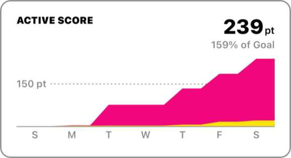

World Health Organization (WHO) and the American Heart Association recommend the following exercise per week.
For adults aged 18 to 64
- At least 150 minutes per week of moderate-intensity activity
- At least 75 minutes per week of vigorous-intensity activity
- Or a combination of both
Active Score allows you to see if you are achieving the amount of exercise recommended.

The initial value of the goal is 150 pt.
150 pt is equivalent to the recommended values for World Health Organization (WHO) and the American Heart Association.
You can change the goal of Active Score in "Settings" > "Weekly Goals".
| Exercise Intensity(%MHR) | Points per Minute | |
|---|---|---|
| ■ Vigorous | 70% or higher | 2 pt |
| ■ Moderate | 50% - 69% | 1 pt |
| ■ Low | 49% or less | 0 pt |
Active Score points are doubled for vigorous-intensity exercise. The more vigorous-intensity exercise you do, the more points you will earn.
The value of exercise intensity (%MHR) is based on American Heart Association: Target Heart Rates Chart, but there is no upper limit.
Points will be added in the week of the workout start date.
It will not be split even if a workout continues until the next week.